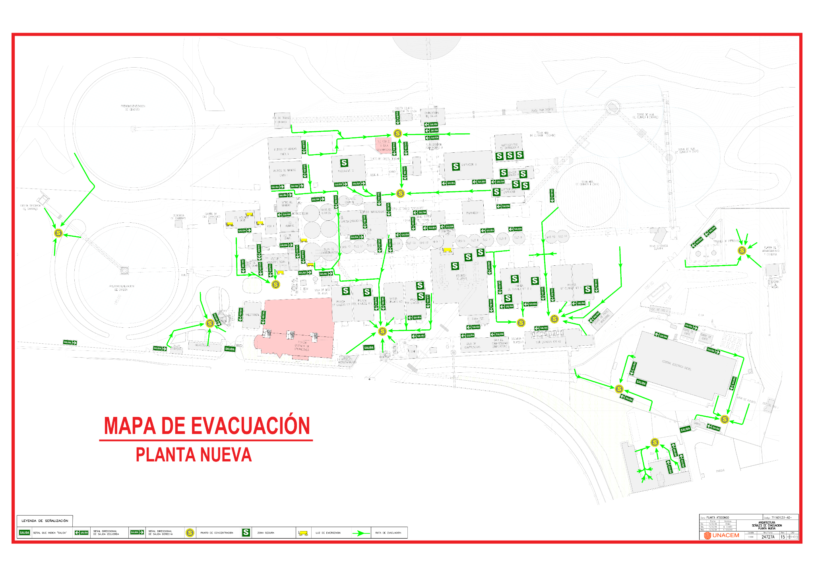

Gestión de Izaje Mecánico de Cargas
Equipos por tipo
Personal por capacitación
Trabajos de Izaje en Planta Atocongo

Documento de referencia
DSHIU-S-006
Abrir estándarEstándar de Izaje de Cargas
“Unidos crecemos para construir un mundo sostenible”.
Inventario de Equipos de Izaje
Registro compacto y rápido de uno o varios equipos.
Puedes adjuntar varios archivos en un mismo registro. Si seleccionas “Otro” o “Certificado del propio fabricante”, el registro quedará en evaluación por UNACEM.
Equipos por registrar
0 equiposPersonal de Izaje
Registro de competencias con vigencia automática de 2 años.
Competencias por registrar
0 personasSeguimiento y Reportes
Consulta, visualiza adjuntos, edita, elimina y genera masters PDF.
Estado de equipos
Estado de competencias
Master de Equipos de Izaje
Master de Competencias del Personal
Plano Interactivo de Trabajos de Izaje en Tiempo Real
Consulta los trabajos críticos de izaje reportados en la BD de Trabajos de Alto Riesgo UNACEM.
Trabajos por empresa
Lista de trabajos de izaje
Buenas prácticas comunicadas por UNACEM
Materiales para consulta y difusión por las empresas contratistas.
Controles Operacionales por Empresa
Carga mensual de evidencias fotográficas de controles de izaje.
EstatusSe marcará “Cumplido” cuando cada control tenga al menos 1 foto.
Seguimiento mensual
Revisión UNACEM
Previsualización y aprobación dentro del aplicativo.
Zona restringida. Habilita la revisión con la clave de UNACEM.